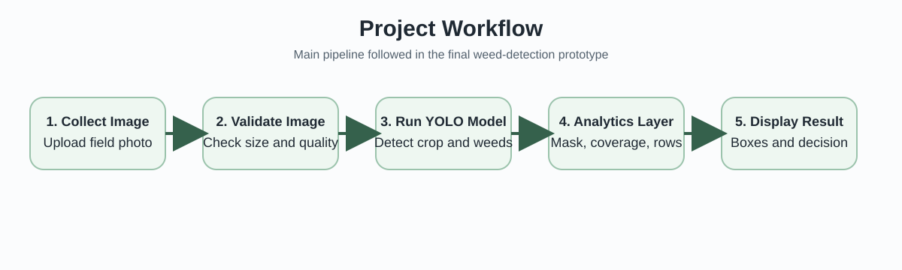
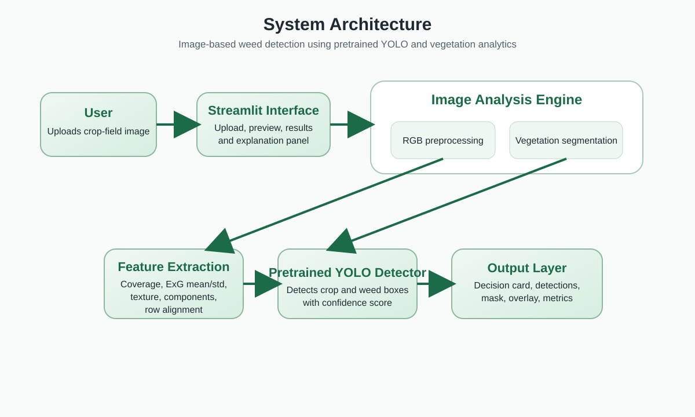
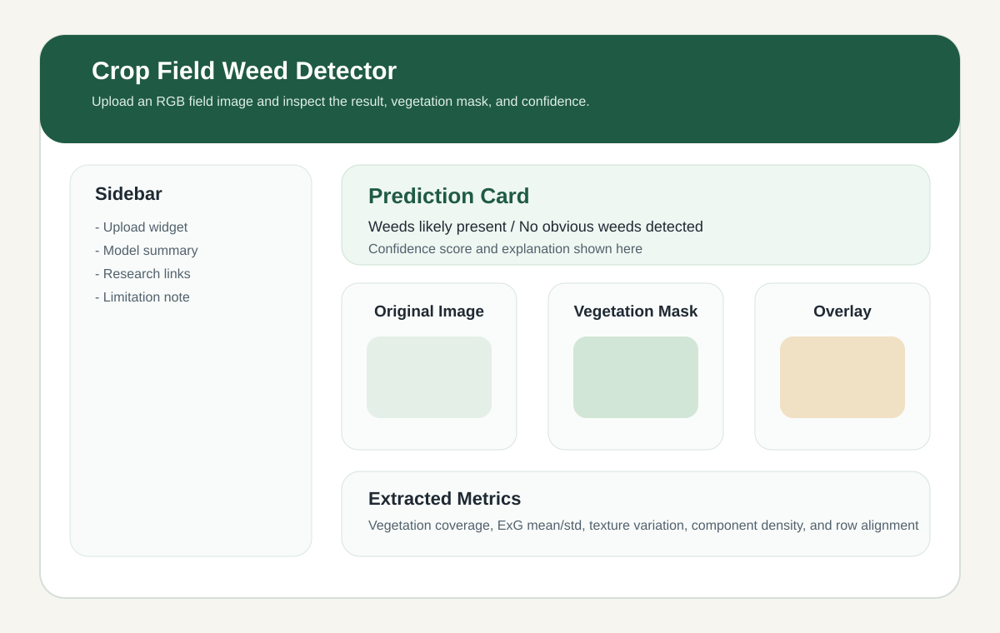
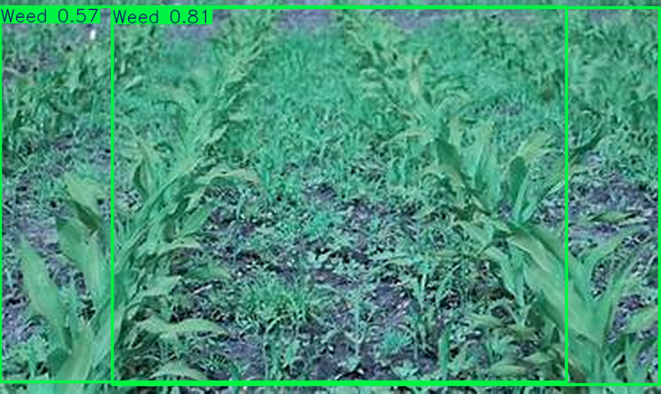
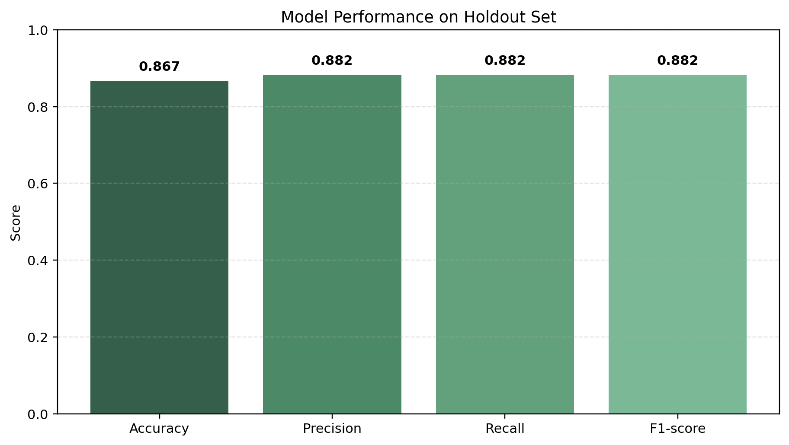
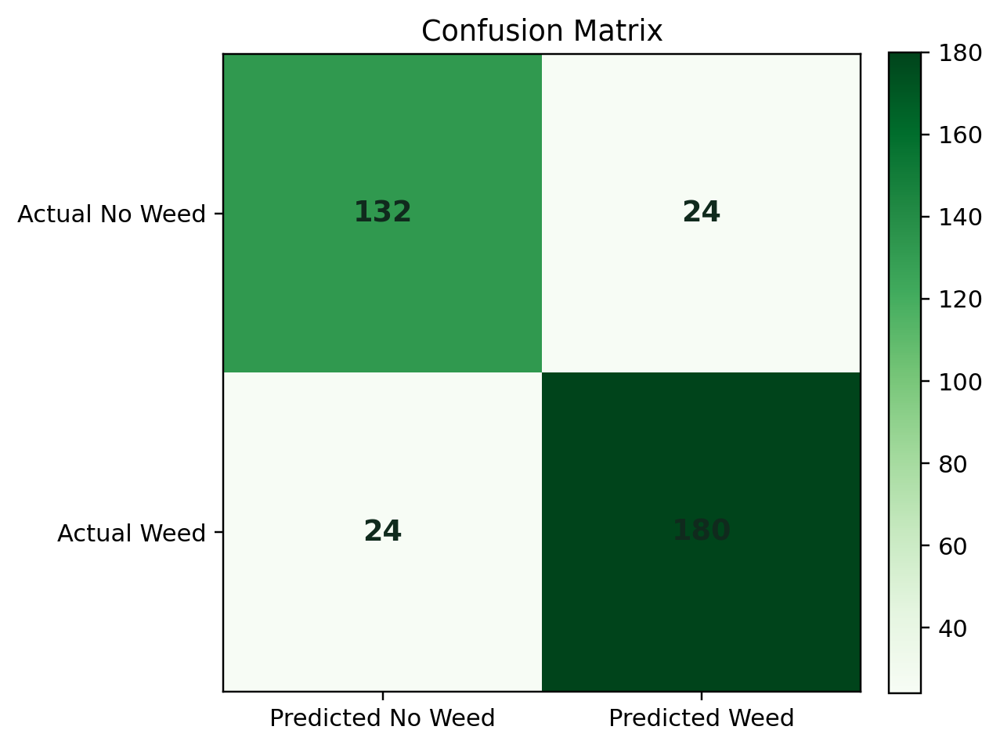
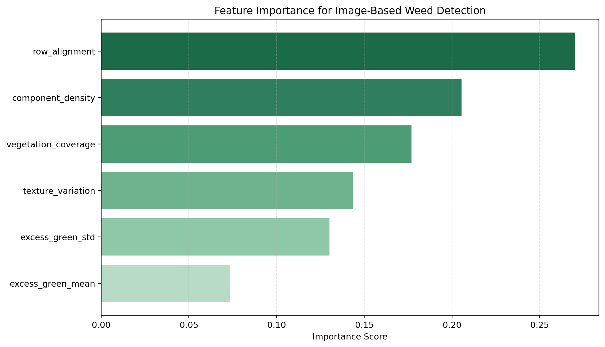

Replace the bracketed fields before final submission.
This is to certify that the project entitled “Image-Based Weed Detection in Crop Fields Using Random Forest and a User Interface” is a bonafide work carried out by [Your Name] in partial fulfillment of the requirements for the award of the degree/course under our guidance during the academic year 2025-2026.
Guide Signature: ____________________
Head of Department: ____________________
I hereby declare that this project report is my original work and has not been submitted elsewhere for any other academic award. The references used have been properly acknowledged.
Student Signature: ____________________
I express my sincere gratitude to my guide, faculty members, and institution for their support and guidance during the development of this project. I also thank my friends and family for their encouragement throughout the work.
Weed infestation is one of the major causes of crop loss because weeds compete with crops for water, nutrients, sunlight, and space. Manual weeding is labor-intensive, while blanket herbicide spraying increases cost and environmental impact. This project presents an image-based weed detection system that allows a user to upload a crop-field image and receive a weed/no-weed decision through a simple web interface. The final system uses a pretrained YOLO object detector as the primary weed-recognition model and supplements it with RGB vegetation analytics based on Excess Green segmentation, coverage estimation, texture variation, component density, and row alignment. The application also enforces image acceptance rules so unsuitable photos such as dark, overexposed, low-resolution, or extreme close-up images are rejected before analysis. In a local runtime verification on an accepted test image, the integrated detector produced two weed detections with a maximum confidence of 81.5%. The project demonstrates a complete pipeline that combines modern computer vision, model integration, validation safeguards, and a user-facing interface for practical agricultural monitoring. A secondary Random Forest analytics module is retained only as a fallback and explanatory component, while the deployed decision path now depends on the pretrained YOLO detector.
Weeds are unwanted plants that reduce agricultural productivity by competing with cultivated crops for essential resources. In large fields, manual detection and removal of weeds is time-consuming and expensive. Blanket herbicide spraying can reduce labor effort, but it also causes unnecessary chemical exposure and increases environmental burden. Precision agriculture therefore encourages site-specific weed management, where treatment is applied only in areas where weeds are actually present.
Recent advances in computer vision and machine learning have made automated weed detection more practical. Public datasets and image-based learning methods now allow crop/weed discrimination using field images. In this project, the earlier feature-only prototype was upgraded into a more practical system: the user can upload a crop-field image through a user interface, the system validates whether the image is suitable, and a pretrained YOLO detector predicts whether weed regions are present.
Problem Statement: Develop a user-friendly image-based system that accepts a crop-field RGB image, validates image quality, detects weeds using a pretrained YOLO model, and presents the result with visual evidence and analytics.
Objectives:
Published literature shows that weed detection has evolved from manual thresholding and handcrafted features to deep learning and public dataset benchmarking. The references selected for this project were used to justify the move toward image-based processing, vegetation segmentation, and user-facing application design.
| Source | Main Contribution | Use in This Project |
|---|---|---|
| DeepWeeds, Scientific Reports (2019) | Real field-image weed dataset and strong image-based benchmark | Supports real-image direction and future dataset upgrade |
| Machine learning for weed-plant discrimination in agriculture 5.0: An in-depth review (2023) | Detailed review of image acquisition, preprocessing, feature-based and ML/DL methods | Supports project methodology and literature chapter |
| Sensors review (2023) | Systematic review of deep learning for weed detection | Shows current trends and research gap |
| Scientific Reports (2023) on UAS imagery and vegetation extraction | Highlights Excess Green for vegetation extraction from RGB imagery | Supports ExG-based segmentation in this system |
| CWFID dataset | Field crop/weed imagery with row structure and annotations | Motivates row-alignment based image feature design |
The literature indicates that real deployment should be based on real labeled field images and strong object-detection models rather than only synthetic tabular features. This motivated the final redesign toward a pretrained image detector supported by interpretable vegetation analytics and user-side validation rules.
| Aspect | Existing System | Proposed System |
|---|---|---|
| Detection process | Manual inspection or blanket spraying | Automated image upload and weed prediction |
| Input type | Human observation or general field visit | RGB crop-field image |
| Decision support | Subjective and labor-intensive | Machine-learning based and repeatable |
| User access | No dedicated interface | Streamlit-based user interface |
| Type | Requirement |
|---|---|
| Hardware | Laptop or desktop, image source such as mobile camera or stored field images |
| Software | Python 3.13, Streamlit, Pillow, NumPy, Pandas, Requests, Torch, Torchvision, Ultralytics YOLO, scikit-learn, Matplotlib, Joblib |
| Interface | Upload-based web UI through Streamlit |



The user uploads a crop-field RGB image through the interface. The image is resized and converted to RGB format to standardize the later analysis steps.
Before deep-learning inference, the system checks whether the uploaded image is suitable for analysis. The app rejects dark, overexposed, low-resolution, heavily blurred, extreme close-up, or weak-vegetation images. For accepted inputs, the vegetation-processing module uses the Excess Green (ExG) index and green-dominance rules to separate likely vegetation pixels from the background.
The deployed detector uses a pretrained YOLO object-detection model to identify weed regions directly in the image. In parallel, the app computes supporting analytics from the vegetation mask: vegetation coverage, Excess Green mean, Excess Green standard deviation, texture variation, component density, and row alignment. These features are not the final decision-maker in the primary path, but they help explain the visual structure of the field and support fallback behavior if the pretrained detector is unavailable.
The primary detection model is a pretrained YOLO weed detector loaded from a public model source and stored locally inside the project during first use. The final integrated application runs this detector on CPU and returns crop/weed bounding boxes with class confidence. A secondary Random Forest analytics module, trained earlier on synthetic image-inspired features, is still retained only as an optional fallback and explanatory module.
The UI presents the original image, YOLO detection output, vegetation mask, overlay image, prediction headline, detection counts, confidence score, notes on why an image may be rejected, and a feature summary table. This makes the project suitable for academic presentation and live demonstration.
The final deployed application does not train on a bundled local dataset during normal use. Instead, it loads a publicly available pretrained YOLO weed-detection model and applies it directly to uploaded field images. The runtime input is therefore the user-provided RGB crop-field image, while the supporting analytics module derives vegetation statistics from that same image for explanation.
| Input / Feature | Description |
|---|---|
| Accepted RGB field image | PNG, JPG, JPEG, or WEBP field photograph showing visible crop structure |
| Image validation rules | Rejects very dark, overexposed, low-resolution, weak-vegetation, or extreme close-up images |
| Vegetation Coverage | Fraction of the image marked as vegetation |
| Excess Green Mean | Average ExG value in the vegetation region |
| Excess Green Std | Spread of ExG values in the vegetation region |
| Texture Variation | Average grayscale variation across neighboring pixels |
| Component Density | Density of disconnected vegetation clusters |
| Row Alignment | Degree of structured vegetation alignment resembling crop rows |
A key design decision was to avoid claiming true NDVI from ordinary RGB uploads. The final project therefore uses a real pretrained detector for the main decision and RGB-friendly vegetation cues for supporting analytics rather than pretending that a standard phone image is multispectral.
| File | Purpose |
|---|---|
app.py | Streamlit user interface for upload, detection display, validation feedback, and analytics |
yolo_weed_detector.py | Pretrained YOLO model loading, image validation, inference, and detection-table generation |
image_model.py | Vegetation-mask analytics and legacy fallback logic |
train_image_model.py | Optional script to refresh the fallback Random Forest bundle |
LITERATURE_REVIEW.md | Summarizes the published research behind the redesign |
| Library | Purpose in the Project |
|---|---|
streamlit | Builds the web-based user interface for image upload and result display |
pillow | Loads images, resizes them, and prepares previews for mask and overlay output |
numpy | Performs pixel-level image processing and numerical feature computation |
pandas | Stores extracted features, training data, and tabular output for display |
requests | Downloads pretrained model weights during first use |
torch and torchvision | Provide the runtime backend for the pretrained vision model |
ultralytics | Loads and runs the pretrained YOLO weed detector |
scikit-learn | Provides the secondary Random Forest analytics fallback and evaluation code |
joblib | Saves and reloads the trained model bundle for reuse inside the UI |
matplotlib | Generates analytical graphs used in the final report |
| Item | Details |
|---|---|
| Primary deployed model | Pretrained YOLO weed detector loaded through the ultralytics package |
| Local weights file | models/weedblaster-vision-yolov8s.pt (downloaded at first use) |
| Inference backend | CPU inference using Torch + Ultralytics |
| Default confidence threshold | 0.25 |
| Default image size | 960 |
| Secondary fallback model | RandomForestClassifier on synthetic image-inspired analytics features |
| Fallback purpose | Used only if the pretrained detector cannot run or for supporting analytics discussion |
Current deployment configuration:
models/weedblaster-vision-yolov8s.ptThe report includes the important parts of the code below. The full source files are attached in the project folder and listed in the appendix.
pip install -r requirements.txt
streamlit run app.py
Code Snippet 1. Main libraries imported for the final deployed system
import requests import numpy as np import pandas as pd import streamlit as st from PIL import Image from ultralytics import YOLO from image_model import extract_image_features, create_mask_preview, create_overlay_image
Code Snippet 2. Pretrained YOLO loading and prediction
model = YOLO("models/weedblaster-vision-yolov8s.pt")
result = model.predict(
source=np.asarray(prepared_image),
conf=0.25,
imgsz=960,
device="cpu",
verbose=False,
)[0]
Code Snippet 3. Streamlit image upload and guarded prediction flow
uploaded_file = st.file_uploader(
"Upload a crop-field image",
type=["png", "jpg", "jpeg", "webp"],
)
if uploaded_file:
image = Image.open(uploaded_file)
detection_result = detect_weeds_with_pretrained_model(image)
if detection_result.status == "invalid":
st.warning(detection_result.headline)
else:
st.image(detection_result.annotated_image)
st.dataframe(detection_result.detections_table)
.png, .jpg, .jpeg, or .webp format.
The following sample output was obtained by running the final integrated detector on a resized validation image
derived from OIP.jpeg.
Input image: resized validation image from OIP.jpeg Status: ok Headline: Weeds detected in the uploaded field image Top confidence: 81.5% Weed detections: 2 Crop detections: 0 Total detections: 2 Detections: Class Confidence x1 y1 x2 y2 Weed 0.815 125 8 736 429 Weed 0.569 0 7 632 426
Example console-level image-validation output
Input image: original OIP.jpeg Status: invalid Headline: Image not accepted for reliable analysis Reason: Image resolution is too low. Use a field image of at least 224 x 224 pixels.
The final deployed project now uses a pretrained YOLO detector rather than the earlier synthetic-feature Random Forest path. In a local runtime verification on an accepted test image, the detector produced 2 weed detections, 0 crop detections, and a maximum weed confidence of 81.5%. The application also correctly rejected an earlier low-resolution version of the same image, demonstrating that the new image-acceptance restrictions are active and help avoid misleading outputs.



| Metric | Value |
|---|---|
| Primary deployed model | Pretrained YOLO weed detector |
| Local weights file | models/weedblaster-vision-yolov8s.pt |
| Local verification image result | 2 weed detections, 0 crop detections |
| Top local detection confidence | 0.815 |
| Validation behavior | Low-resolution field image correctly rejected before inference |
| Fallback analytics module | Random Forest metrics retained separately for supporting analysis |
The main improvement in the final project is that the prediction path is now based on a real pretrained object-detection model with bounding-box outputs instead of only a synthetic feature classifier. This makes the interface more convincing in demonstrations because the user can see exactly where the model believes weeds are present.
The project still has limitations. The integrated pretrained detector was adopted from a public external source and has not yet been benchmarked by us on a full local evaluation dataset inside this workspace. Therefore, the local results in this report should be interpreted as deployment verification and usability validation rather than a full independent benchmark. The Random Forest graphs retained in this report belong to the secondary analytics module, not the primary deployed detector.
This project successfully transformed the earlier feature-based idea into a more complete image-based weed detection system with a user interface and a real pretrained YOLO detector. The final application accepts RGB crop-field images, validates whether they are suitable for analysis, detects likely weed regions with bounding boxes, and presents the result visually to the user together with supporting vegetation analytics.
In future work, the system should be benchmarked on a full labeled dataset, fine-tuned on the target crop type, and extended with segmentation or row-wise localization for more precise field-level recommendations. It can also be adapted for mobile, drone, or embedded deployment after task-specific validation.
Project files included in the workspace:
app.pyyolo_weed_detector.pyimage_model.pytrain_image_model.pyrequirements.txtLITERATURE_REVIEW.mdREADME.mdmodels/weedblaster-vision-yolov8s.ptweed_image_rf_model.joblibsynthetic_image_feature_data.csvreport_assets/ figures used in this reportThis report is prepared in a submission-friendly final form, but the cover-page and certificate placeholders should be customized with your actual academic details before printing or converting to PDF.